Everything you need to know about BSV Browser — a free, open source Web3 browser with built-in wallet, identity, and micropayment capabilities for the BSV Blockchain.
BSV Browser is a mobile web browser for iOS and Android that works just like any browser you already know — but with built-in support for BSV Blockchain technology. It lets you browse regular websites, manage a self-custodial BSV wallet, prove your identity cryptographically, and make instant micropayments, all from one app.
At its core, BSV Browser is a full-featured web browser. You can visit any website, manage bookmarks, keep browsing history, and open multiple tabs. What sets it apart is the optional Web3 layer: when you enable it, websites that support the BRC-100 standard can interact with your wallet for payments, identity verification, encryption, and more — all with your explicit permission.
The browser ships with two modes:
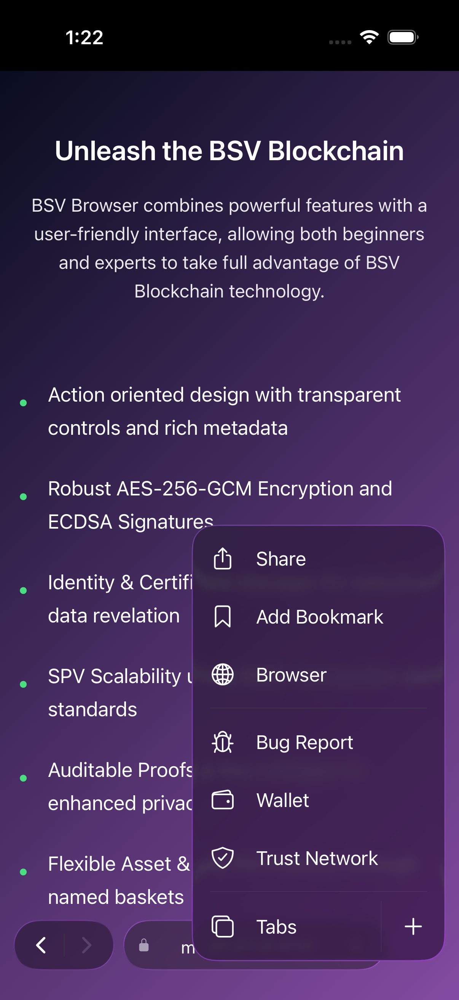
Setting up BSV Browser takes just a few minutes. You can start browsing the web immediately and enable Web3 features whenever you are ready.
When you first open the app, you are in Web2 mode. To unlock wallet and blockchain features, tap the menu button (the three dots at the bottom-right of the screen) and select Enable Web3. You will be presented with two options:
If you are not ready to create a wallet, tap Cancel and continue browsing in Web2 mode.
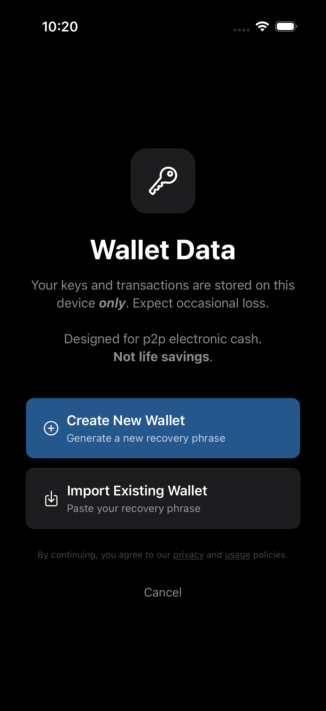
If you create a new wallet, you will see a 12-word recovery phrase. This is the only way to recover your wallet if you lose your device or reinstall the app.
Important: Your keys and transaction data are stored on your device only. BSV Browser is self-custodial — nobody else holds your keys. If you lose your recovery phrase, your wallet cannot be recovered.
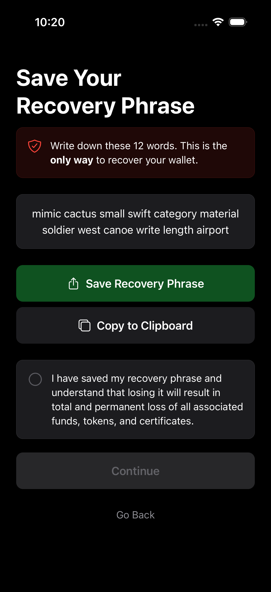
BSV Browser works like any mobile browser you are used to. Type a URL or search query into the address bar, navigate with back and forward buttons, and manage tabs and bookmarks.
The address bar sits at the bottom of the screen. Tap it to enter a URL or search query. As you type, the browser shows autocomplete suggestions drawn from your bookmarks and browsing history.
If you type a term that does not look like a URL, the browser checks the BSV overlay network for a matching application. If a match is found, you are taken directly there.
Tip: Look for the lock icon next to the URL — it indicates the site is served over HTTPS.
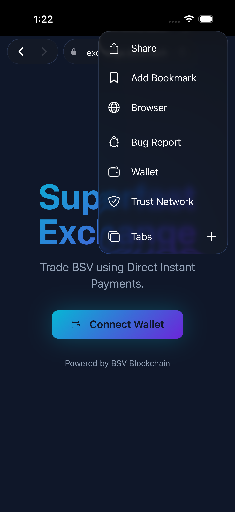
Open the menu and tap Tabs to see all your open tabs in a card-style overview. You can:
Your open tabs are automatically saved between sessions, so you pick up right where you left off.
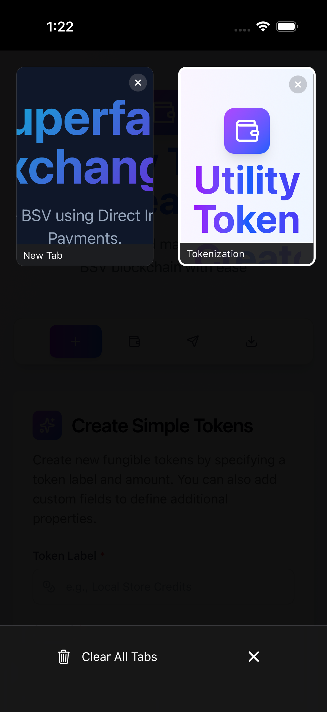
From the menu, tap Browser to access your bookmarks, browsing history, and homepage settings.
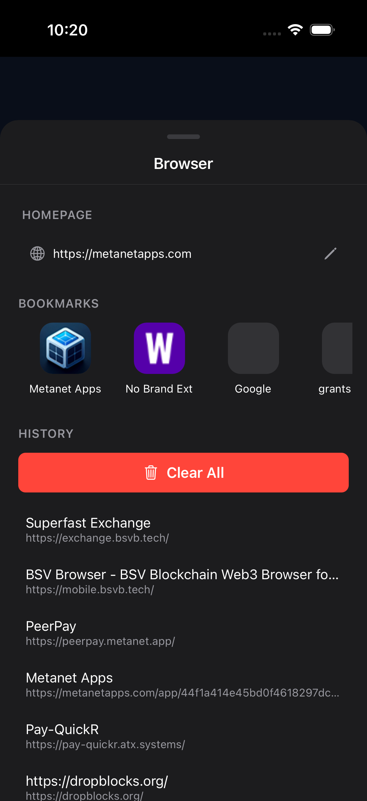
Tap the three-dot button at the bottom right to open the menu popover. From here you can:
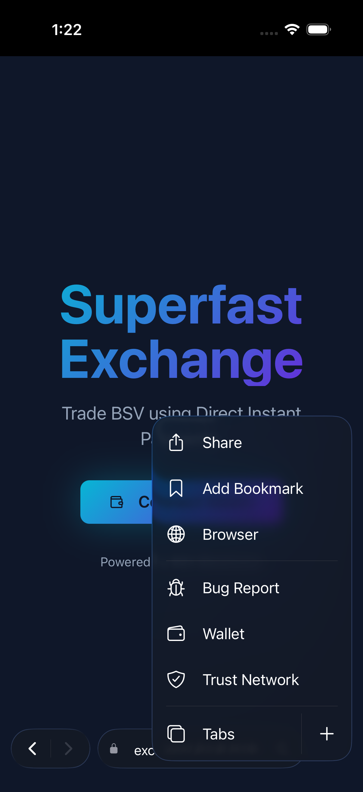
BSV Browser can discover applications registered on the BSV overlay network. When you enter a search term in the address bar that is not a recognisable URL, the browser queries the overlay for matching apps. If a single match is found, you are navigated there automatically. If multiple matches are found, they appear as suggestions.
This means you can find BSV-powered apps by name without needing to know their exact URL.
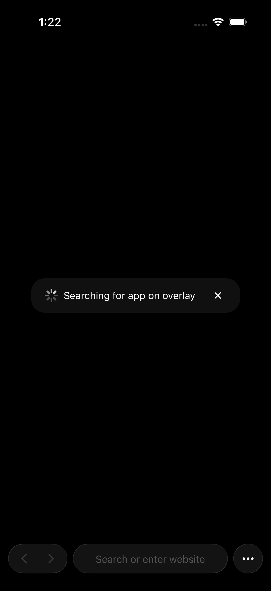
Once Web3 is enabled, BSV Browser includes a fully self-custodial BSV wallet. You can view your balance, send and receive payments, and interact with Web3 applications that use micropayments.
Open the menu and tap Wallet to see your wallet settings. Here you can:
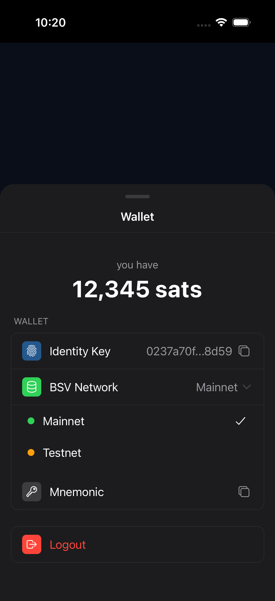
When you visit a Web3-enabled website, it can request a payment from your wallet. A permission sheet slides up from the bottom of the screen showing:
You can tap Authorize to approve or Reject to decline. No payment is ever made without your explicit approval.
Tip: Micropayments on BSV are typically fractions of a cent, making it practical to pay for individual actions like saving a note, posting a message, or accessing premium content.
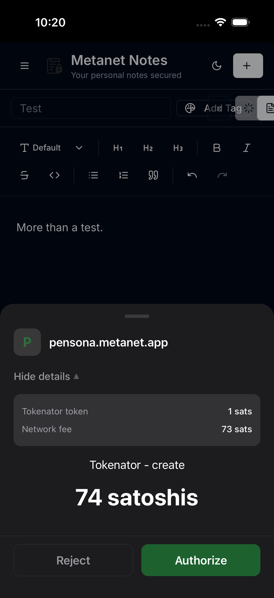
The Identity Payments screen (accessible from Wallet settings) lets you send BSV directly to another person using their identity rather than a raw blockchain address. Search for the recipient by name across the BSV identity network, enter an amount, and send.
You can also receive identity-based payments here. Incoming payments appear in a list and can be accepted with a single tap.
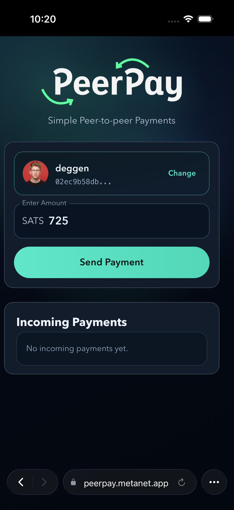
For compatibility with traditional BSV wallets and services, BSV Browser also supports standard address-based transactions via the Legacy Payments screen.
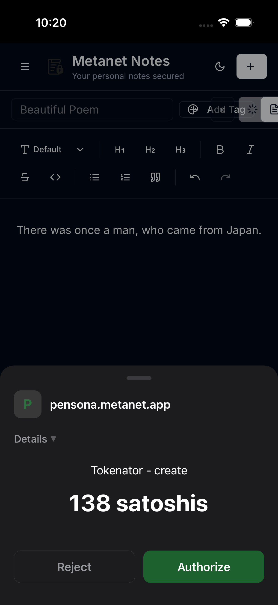
The Transactions screen (accessible from Wallet settings) lists all your transactions with colour-coded status badges:
For each transaction, you can view it on the block explorer, copy the raw transaction data, or abort transactions that are still pending.
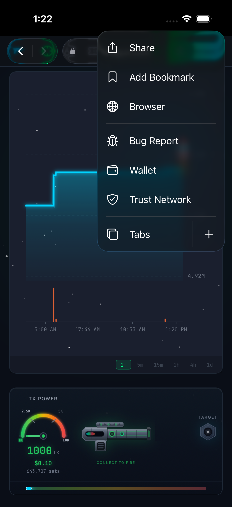
BSV Browser gives you a cryptographic identity that you control. There are no usernames, passwords, or sign-up forms. Your identity key is derived from your recovery phrase, and you decide which applications and entities can verify aspects of your identity.
When you create or import a wallet, a unique identity key is generated. This key represents you across all Web3 applications. It is shown in your Wallet settings — tap it to copy.
Web3 applications use this key to identify you without needing email addresses, phone numbers, or any other personal information. Mutual authentication means both you and the app prove who you are.
The Trust Network screen lets you manage which identity certifiers you trust. Certifiers are entities that vouch for identity attributes (like a real name or organisation membership).
When a Web3 app asks to verify an identity certificate, it checks against your trusted certifiers.
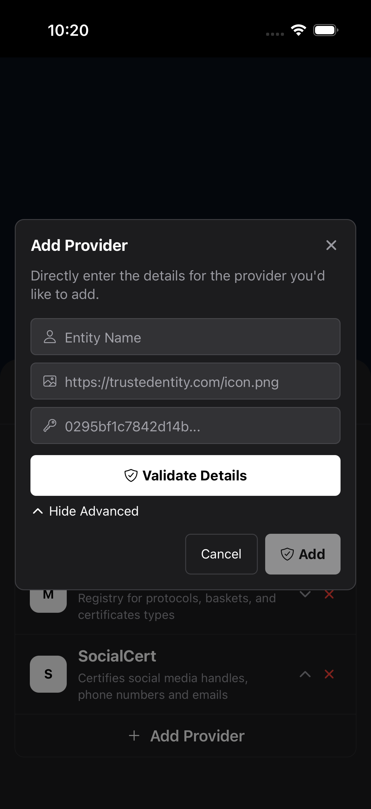
BSV Browser supports identity certificates that allow you to prove specific attributes about yourself without revealing everything. For example, you could prove you are over 18 without revealing your exact date of birth, or prove your organisation membership without revealing your name.
When a Web3 application requests certificate information, a permission sheet appears showing exactly which fields are being requested. You always have the choice to approve or reject.
BSV Browser is designed around explicit user consent. No wallet operation happens without your approval, and the app does not collect or transmit your browsing data.
When a Web3 application requests an action from your wallet, a detailed permission sheet appears. Depending on the request type, you may see:
Every request shows the originating domain. Tap Authorize to approve or Reject to decline.
Websites may also request standard device permissions such as camera, microphone, or location access. These are handled per-domain:
BSV Browser does not collect your browsing history, cookies, or tracking data. Browsing history and bookmarks are stored only on your device and are never transmitted to BSV Association or any third party.
For full details, read the Privacy Policy and Usage Policy.
Get the most out of BSV Browser with these tips.
On first launch, BSV Browser will offer to become your default browser. On iOS, go to Settings > Apps > Default Apps. On Android, go to Settings > Apps > Default apps > Browser app. This way, all links you tap in other apps open in BSV Browser.
In Wallet settings, tap the network selector to switch between Mainnet (real BSV), Testnet (test coins for development), and Teratest. Switching networks rebuilds the wallet on the selected chain. Use Testnet to experiment without risking real funds.
In Wallet settings, tap Export Data to save a backup of your wallet database files. This uses the system share dialog so you can send the files to cloud storage, email, or any other location.
BSV Browser supports displaying amounts in satoshis or fiat currencies (USD, EUR, GBP). Tap the balance display to cycle through formats. Exchange rates are updated automatically every five minutes.
The app automatically detects your device language. It is localised into English, Chinese (Simplified), Hindi, Spanish, French, Arabic, Portuguese, Bengali, Russian, and Indonesian.
BSV Browser handles file downloads natively. When a website offers a file (PDF, ZIP, images, etc.), the browser intercepts the download and saves it using your device's native download mechanism.
No. BSV Browser works as a fully functional web browser in Web2 mode without any wallet setup. You can enable Web3 features at any time by creating or importing a wallet.
BSV Browser is self-custodial. Your keys are stored only on your device. If you lose your device and have not saved your 12-word recovery phrase, your wallet cannot be recovered. Always back up your recovery phrase in a safe location.
No. Every spending request triggers a permission sheet that shows the exact amount and the requesting domain. You must explicitly tap Authorize before any funds leave your wallet.
No. BSV Browser does not collect or transmit your browsing history, wallet keys, or personal data to BSV Association or any other party. Everything stays on your device. See the Privacy Policy for details.
A recovery phrase (also called a seed phrase or mnemonic) is a set of 12 words generated when you create your wallet. These words can be used to restore your wallet on any compatible device. Keep them secret and stored safely offline.
BRC-100 is the BSV Wallet Interface standard. It defines how web applications communicate with wallets. BSV Browser implements all 28 methods of the standard, enabling any compliant web application to request payments, signatures, encryption, certificates, and more — always with your consent.
Yes. A desktop version is available at desktop.bsvb.tech.
Whether you have a question, found a bug, or want to request a feature — we are here to help.
For direct support requests, account questions, or anything you need help with, email the development team.
support@bsvassociation.orgFound a bug? Have an idea for a new feature? The GitHub issues page is the place to report problems and make feature requests. As an open source project, your feedback directly shapes the development roadmap.
Open an issue on GitHub →